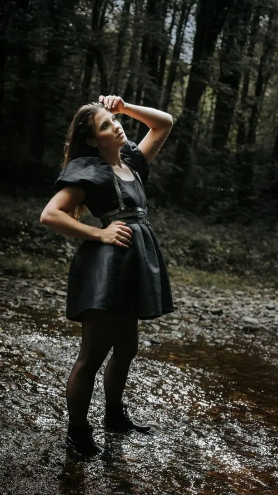
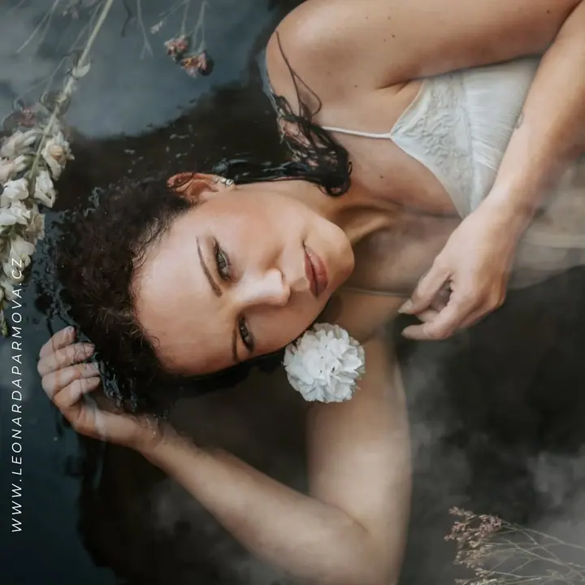
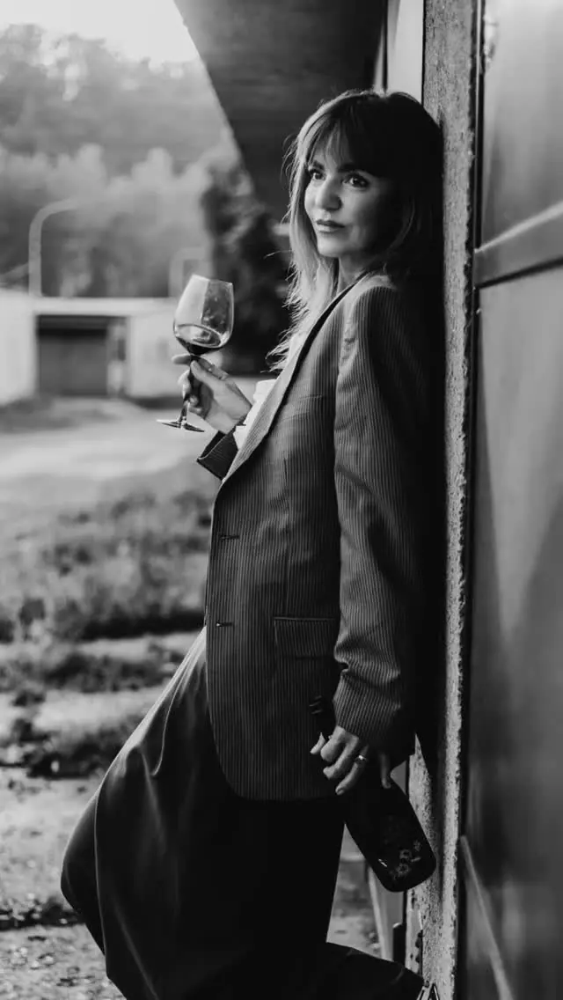

Rodinné, těhotenské a narozeninové focení
Fotíme kdekoli venku nebo u mě v ateliéru, místo vybereme spolu podle druhu focení a počasí. Můžete si u mě půjčit rekvizity, šaty i oblečení pro děti.

Jmenuji se Leonarda Parmová a fotím rodiny, miminka, nastávající maminky i ženy, které se chtějí vidět jinak. Fotím ve svém ateliéru ve Frenštátě pod Radhoštěm i venku v…
Rezervovat termín„Co je důležité, je očím neviditelné“, opakoval si Malý princ. Já se ale snažím, aby každý kousek lásky, štěstí a něhy, který v daný okamžik cítíte, z fotek sálal dál a byl vidět. Proto mě nejvíc baví fotit rodiny, děti, miminka a ženy, každého tak, jak opravdu je.


Svůj ateliér mám v obchodním domě Kyčera ve Frenštátě pod Radhoštěm, ale ráda vyrážím i ven do Beskyd, k vodě nebo do lesa. Miminka fotím klidně i u vás doma, kde je jim nejlíp.
Pořád sleduji nové trendy ve fotografii a vymýšlím nové rekvizity, které vám můžu k focení zapůjčit. Najdete u mě i šaty, oblečení pro děti a spoustu oblečků, čepiček a čelenek pro novorozence. Během roku chystám také tematická minifocení, třeba vánoční nebo velikonoční.
Co fotím
Fotíme kdekoli venku nebo u mě v ateliéru, místo vybereme spolu podle druhu focení a počasí. Můžete si u mě půjčit rekvizity, šaty i oblečení pro děti.
Ženské portréty v ateliéru i venku, třeba u vody nebo v lese. Pro skutečné ženy, které se chtějí vidět jinak než v zrcadle.
Miminko fotím u vás doma nebo v ateliéru, v lifestylovém stylu a s lehkým wrapováním. Na focení máme až 3 hodiny a oblečky, čepičky i čelenky vám zapůjčím.
Od samotného obřadu až po celý svatební den od příprav po první tanec. Vyberete si balíček, nebo se domluvíme na vlastním harmonogramu.
Postup
Napište mi e-mailem, přes sociální sítě nebo si termín zarezervujte přímo na webu. Domluvíme se, jaké focení si přejete.
Místo vybíráme po dohodnutí termínu a druhu focení, venkovní focení vždy podle počasí. Řekneme si, jaké rekvizity, šaty nebo oblečení pro děti si půjčíte.
Fotíme v klidu a bez spěchu v ateliéru, venku nebo u vás doma. U miminek máme času až 3 hodiny.
Podle balíčku si fotky vyberete sami z náhledové galerie, nebo je vyberu a upravím já. K fotkám dostanete i tištěné fotografie 13×18.
Otázky
Balíček Standard stojí 2 300 Kč a obsahuje 15 fotek podle vašeho výběru a jejich tisk. Balíček Ultra za 3 300 Kč obsahuje nejméně 30 až 50 fotek, které vyberu a upravím, a tisk 15 z nich. Každá fotka navíc stojí 200 Kč.
U sebe v ateliéru v obchodním domě Kyčera ve Frenštátě pod Radhoštěm, nebo venku kdekoli po domluvě. Miminka můžu fotit i u vás doma.
Nemusíte. Můžete si u mě zapůjčit rekvizity, šaty a oblečení pro děti (ve velikostech, které mám k dispozici). Pro novorozence mám spoustu oblečků, čepiček a čelenek.
Mini balíček za 8 000 Kč pokryje obřad, společné a párové focení. Midi za 14 000 Kč zahrnuje i oběd, první tanec a krájení dortu, zhruba 6 hodin. Maxi za 18 000 Kč je celý svatební den od příprav, zhruba 10 až 12 hodin.